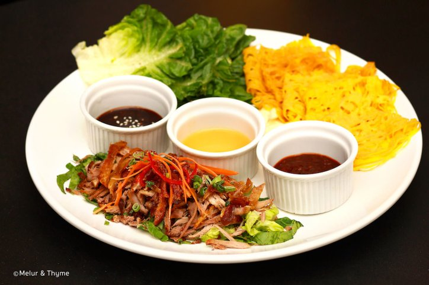

There aren’t many non-Chinese restaurants in Kuala Lumpur that serve duck. Actually, there are almost none, so when we heard a duck-specialty halal restaurant popping up in KLCC, our interest was piqued. Melur and Thyme is a rebranded restaurant, formerly known as Duck & Such, and while duck is still the main ingredient on the menu, there are also non-duck dishes for those who aren’t inclined that way.
Situated on the ground floor of Suria KLCC, Melur and Thyme can be found right across from Harrods Cafe and the Ralph Lauren boutique: inside it is quieter than the rest of the mall, lending the place a refined, elegant ambiance. Decor is understated yet maintains a classy vibe: expect an East-meets-West interior with kopitiam marble-top tables, low-hanging bulbs, white brick walls and intricate wired art, all spelling ‘elegant’ without having too much glamour, enticing both casual mall strollers and working executives.
Being a halal eatery means no alcohol on the premises – everything in Melur and Thyme is alcohol-free, including the drinks. That does not mean they discount on the excitement through, as the drinks menu is still varied, with quirky signature mocktails such as Simply Cooling (cucumber sticks, lime or lemon squeeze, topped with sprite) and Virgin Bellini (peach juice, grenadine syrup and soda), smoothies, and freshly squeezed juices. The restaurant’s fusion-Malaysian theme is also found in the dessert menu – there are assorted local Malaysian kuih, old-fashioned ice cream, and an interesting choice of chocolate desserts, with its category aptly named ‘Death by Chocolate’.
Melur and Thyme serves breakfast, starting at 08:00 for the early risers. While the breakfast menu consists of usual favourites such as scrambled eggs and omelettes, there are also a few unique items such as coconut pancakes and healthy muesli, catering for the health-conscious. Tapas takes the centre stage with two wide categories: Melur, for the eastern flavours such as duck satay, Peking duck and nyonya chicken rendang, and Thyme, for its western counterparts, such as beef goulash, duck confit and salmon croquets. All tapas come with two sizes, small and large, and served with either rice or bread.
As for the mains, duck gets cleverly infused into some favourite classics: carbonara is served with smoked duck and Penang char kuey teow contains juicy slices of duck meat. Non-duck items are also in the spotlight, with Asian noodle soup, grandma’s hokkien mee and deep sea aglio-olio on the menu for those who are not fans of specialty meat.
Like every other restaurants in KLCC, it’s best to make reservations beforehand if you’re planning to drop by Melur and Thyme during peak hours, as seats can get snapped up pretty quickly. Service is also fast, friendly and very accommodating, with friendly waiters ready to seat you as you arrive.